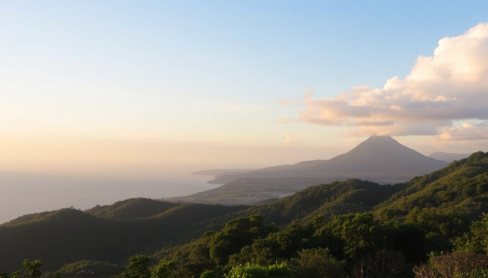

10-Day Costa Rica Itinerary: San José, Arenal, Monteverde & Manuel Antonio

We landed in San José on a Tuesday afternoon, tired but wired. Ten days felt tight for a country that packs cloud forests, volcanoes, and Pacific beaches into one compact slice of Central America. But with a clear route—San José to Arenal, then Monteverde, and finally Manuel Antonio—we hit each region without feeling like we spent half the trip in a shuttle. Here’s exactly how we did it, where we stayed, and what I’d do differently.
How do you get from the airport to San José city center?
Skip the taxi touts at Juan Santamaría International Airport. We walked straight to the official Taxi Aeropuerto booth inside the arrivals hall—rates are fixed, around $30 to downtown San José. The ride takes 20 minutes without traffic, closer to 40 in the afternoon jam.
We dropped bags at Hotel Grano de Oro, a converted Victorian mansion in the quiet Otoya neighborhood. It’s not cheap (around $150/night), but it’s worth it for the rooftop terrace and the on-site restaurant that serves a mean casado with fresh plantains. If you’re on a tighter budget, Hostel Pangea in Barrio Amón is a solid backup—clean dorms, private rooms, and a bar that’s loud but fun.
Is one night in San José enough before heading to Arenal?
Yes, but only if you arrive early enough for an afternoon walk. We did Mercado Central for a cheap lunch—get the chorreada (cheese pancake) from Soda Tapia—then wandered Barrio Escalante for craft beer at Craft Brewing Company. That’s really all you need. San José is a functional hub, not a destination.
The next morning, we booked a shared shuttle through Interbus ($55 per person, 3 hours) to La Fortuna, the town at the base of Arenal Volcano. Driving yourself is doable, but the roads are winding and potholed past Ciudad Quesada. We preferred letting someone else handle the curves.
What’s the best way to see Arenal Volcano and the hot springs?
Spend two full days in La Fortuna. Day one: hit the Arenal Volcano National Park early (opens 8 a.m., $15 entry). The 1968 Trail gives you the best view of the volcano’s black lava flows from the 1968 eruption. It’s a flat 2-mile loop—easy, but bring water because the humidity hits hard by 10 a.m.
- Hanging bridges at Mistico Park — A 2-hour walk across 16 suspension bridges through the canopy. Book the 7 a.m. slot for fewer crowds.
- La Fortuna Waterfall — 500 steps down to a cold swimming hole. Worth the leg burn. Entry is $18.
- Tabacón Hot Springs — The most polished option. Day passes are $85, but we preferred Baldi Hot Springs for its 25 pools and cheaper entry ($45). Both are touristy, but after a day of hiking, soaking in 104°F water feels earned.
We stayed at Arenal Observatory Lodge, which sits on a private reserve 15 minutes from town. The rooms are basic, but the volcano view from the dining room is unmatched. Dinner there is $25 per person for a three-course meal—decent value for the setting.
How do you get from Arenal to Monteverde, and is it worth the hassle?
The route is famously rough: a 3.5-hour drive that includes a 1-hour ferry across Lake Arenal and a bone-rattling gravel road on the Monteverde side. We took the Desafio Adventure Company Jeep-boat-jeep combo ($60 per person). It’s a shared van to the lake, a boat across (you’ll see howler monkeys in the trees along the shore), then another van up the mountain.
Monteverde is a cloud forest—meaning it’s damp, cool, and often drizzly. Pack a light rain jacket and waterproof shoes. We arrived at Hotel Belmar, a family-run lodge perched on a ridge with views down to the Gulf of Nicoya. Their farm-to-table restaurant, Celajes, served the best meal of our trip: wood-fired trout with a side of roasted chayote squash.
What should you do in Monteverde besides the cloud forest?
The Monteverde Cloud Forest Reserve is the main draw—$25 entry, guided night walks are $35 extra. We did the Sendero Bosque Nuboso trail at sunrise and saw three species of hummingbirds within the first five minutes. But the reserve can feel crowded by 10 a.m., so go early.
- Curi-Cancha Reserve — Smaller, less touristed, and better for spotting quetzals. Our guide from Wildlife Tours Monteverde (booked at the reserve entrance) pointed out two resplendent quetzals within 20 minutes.
- Selvatura Park — Ziplining through the canopy. The 15-cable course is a rush, especially the Superman cable (you fly face-down). $60 for the full package.
- Santa Elena Town — Grab a coffee at Stella’s Bakery (the brownies are life-changing) and browse the artisan stalls for wooden bowls.
Skip the Butterfly Garden—it’s small and overpriced at $15. The Bat Jungle is more interesting, but only if you have an hour to kill.
How do you get from Monteverde to Manuel Antonio?
This is the longest transfer of the trip—a 5-hour shuttle through the Pacific coast. We booked a direct shuttle with Monteverde Shuttle Service ($65 per person). The road winds down from the mountains through Puntarenas province, then straightens out along the coast. You’ll pass through Jacó, a surf town that’s fine for a lunch stop but not worth a detour.
We checked into Hotel Manuel Antonio (formerly Hotel Costa Verde)—the one with the famous airplane suite. We didn’t stay in the plane, but our standard room had a balcony overlooking the jungle. Monkeys visited every morning. Rates start at $120/night in high season. For a budget option, Hostel Plinio in Quepos is clean and a 10-minute walk from the park entrance.
Is Manuel Antonio National Park overrated?
Parts of it are. The main beach, Espadilla Sur, is gorgeous—white sand, turquoise water, and howler monkeys in the trees above—but by 11 a.m. it’s packed with tour groups. We hired a guide from Iguana Tours ($40 per person) at the park entrance, which is mandatory if you want to see wildlife beyond the common iguanas. Our guide spotted a three-toed sloth, toucans, and a pair of white-faced capuchins.
- Manuel Antonio National Park — Entry is $18. Go on a weekday. Tuesday was noticeably quieter than Saturday.
- Quepos — The town itself is gritty, but the fish market has fresh ceviche for $5. Eat it on the bench overlooking the marina.
- Playa Biesanz — A small cove 15 minutes south of the park. Less crowded, calmer water for swimming.
- El Avión — A restaurant built inside a retired cargo plane. The food is average (burgers and fish tacos), but the sunset view from the wing is worth a beer.
We spent our last day doing nothing on Playa Espadilla (the public beach outside the park) and eating a final gallo pinto breakfast at Café Milagro in Quepos. Their iced coffee with coconut milk saved us from the heat.
FAQ
Is 10 days enough for Costa Rica? Yes, for a loop of San José, Arenal, Monteverde, and Manuel Antonio. You’ll have time for three full days of activities and one travel day between each stop. Any more destinations (like the Osa Peninsula or Tortuguero) would require at least 14 days.
Do I need a rental car in Costa Rica? Not for this itinerary. Shared shuttles and Jeep-boat-jeep combos cover all the routes. Renting a 4x4 is useful if you want to stop at random spots, but the roads in Monteverde are steep and unpaved—a sedan won’t cut it.
What’s the best time of year to visit? December to April is dry season—blue skies, no rain. We went in February and had perfect weather. May to November is green season (rainy), but you’ll pay half price for hotels and see fewer tourists. Just expect afternoon downpours.
Conclusion
- Book shuttles in advance — Interbus and Desafio fill up fast, especially in high season.
- Pack layers — San José is warm, Monteverde is cool, Manuel Antonio is humid. A rain jacket and hiking sandals cover all three.
- Eat local — $5 casados at sodas beat $20 tourist-trap dinners. Our best meal was a $4 plate of rice, beans, chicken, and plantains at a roadside stand in La Fortuna.
- Skip the guided night tours in Arenal — You can spot frogs and insects on your own with a flashlight. The $35 fee is better spent on a night walk in Monteverde.
- Leave one day unscheduled — We crammed too much into Manuel Antonio. A lazy beach day with a book and a cold Imperial beer was the highlight.